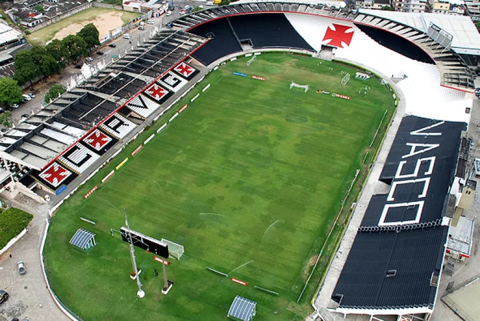

São januário não é só um estádio.
É endereço, lembrança e parte da história de quem faz do Vasco muito mais que futebol.
MERGULHAR NA HISTÓRIAVASCO DA GAMA / DESDE 1898
Da Colina para qualquer lugar. Um espaço independente para quem vive o Vasco dentro e fora dos noventa minutos.

SÃO JANUÁRIO · RIO DE JANEIROFundado em 21 de agosto de 1898, o Vasco construiu uma história marcante no esporte brasileiro.
É endereço, lembrança e parte da história de quem faz do Vasco muito mais que futebol.
MERGULHAR NA HISTÓRIAÉ história, resistência e pertencimento. É levar a Cruz de Malta onde quer que a vida leve.
A VOZ DA TORCIDA ↗MUITO ALÉM DOS NOVENTA MINUTOS
Futebol se discute em campo. A paixão pelo Vasco continua na resenha, nas histórias e nas pessoas que compartilham essa mesma arquibancada.
CONHEÇA NOSSA COMUNIDADE ↗UMA PAIXÃO.
MUITAS VOZES.
UM GIGANTE.
NOSSO ESPAÇO
Este portal reúne conteúdo sobre o Vasco da Gama e apresenta uma comunidade de torcedores que compartilham essa paixão.
Projeto independente, em desenvolvimento. Não é um canal oficial do Vasco da Gama.
O que acontece em campo, os personagens e tudo aquilo que movimenta a temporada.
ACOMPANHAR O FUTEBOLA torcida também escreve essa história, dentro e fora de São Januário.
OLHAR PARA A TORCIDAEm breve: conteúdos sobre futebol, elenco e partidas.
Um espaço dedicado à paixão e à história da torcida vascaína.
A paixão cruz-maltina atravessa gerações!